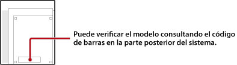

Tipos de discos que se pueden reproducir
Dependiendo del modelo de sistema PS3™ en uso, no es posible reproducir ciertos tipos de discos. Para más información acerca de tipos de soportes compatibles, consulte la sección Solución de problemas de la documentación suministrada con su sistema.
Acerca de los discos de formato PlayStation®2 y los discos Super Audio CD
En la siguiente tabla se enumeran los modelos de sistema PS3™ que pueden reproducir la mayoría de los títulos de discos de formato PlayStation®2, así como discos Super Audio CD.

| Región de venta | Modelo |
|---|---|
| Japón | CECHA00, CECHB00 |
| EE. UU. / Canadá | CECHA01, CECHB01, CECHE01 |
| Latinoamérica | CECHE11 |
| Europa / Australia / Nueva Zelanda | CECHC02, CECHC03, CECHC04, CECHC08 |
| Corea | CECHE05 |
| Hong Kong / Taiwán / Sureste Asiático | CECHA12, CECHB12, CECHE12, CECHA07, CECHB07, CECHA06, CECHE06 |
Información sobre retrocompatibilidad
Aunque su sistema PS3™ pueda reproducir discos de formato PlayStation®2 y PlayStation®, es posible que observe que su reproducción es distinta a la que ofrece el hardware original. En algunos casos, es posible que los discos no funcionen en absoluto. Puede visitar el sitio Web de su región si desea obtener más información acerca de la compatibilidad retroactiva.
Japón
http://www.jp.playstation.com/ps3/status/
EE.UU. / Canadá / Latinoamérica
http://www.us.playstation.com/Support/CompatibleStatus
Europa / Australia / Nueva Zelanda
PC http://es.playstation.com/games-media/news/articles/detail/item83405/
PS3™ http://ps3.es.playstation.com/news/detail/item83405/
Corea
https://www.playstation.co.kr/support